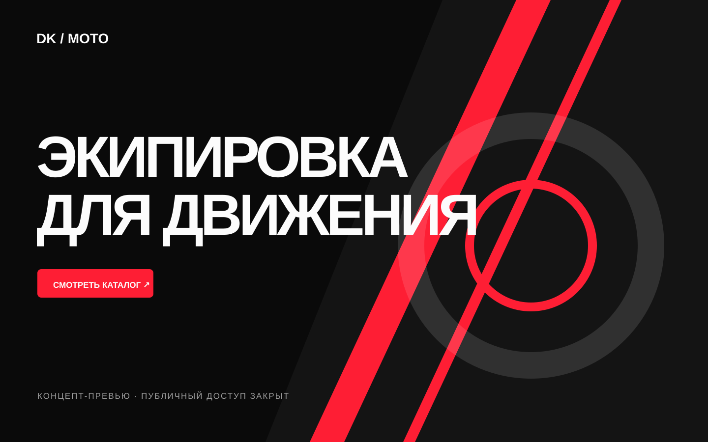
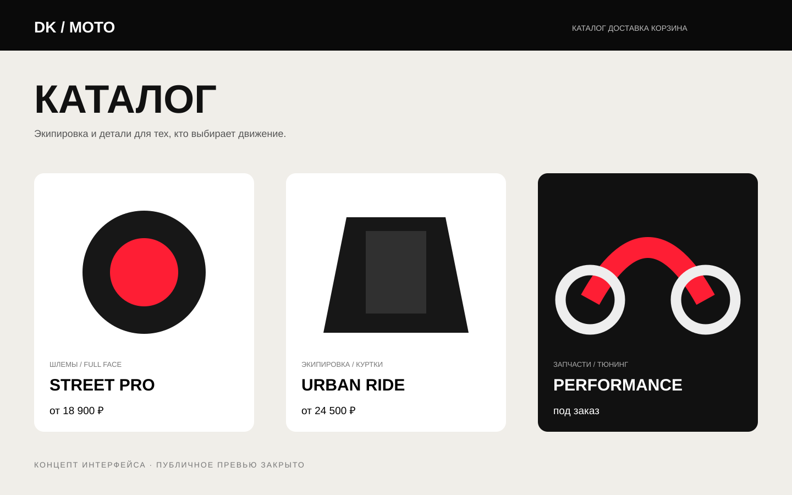
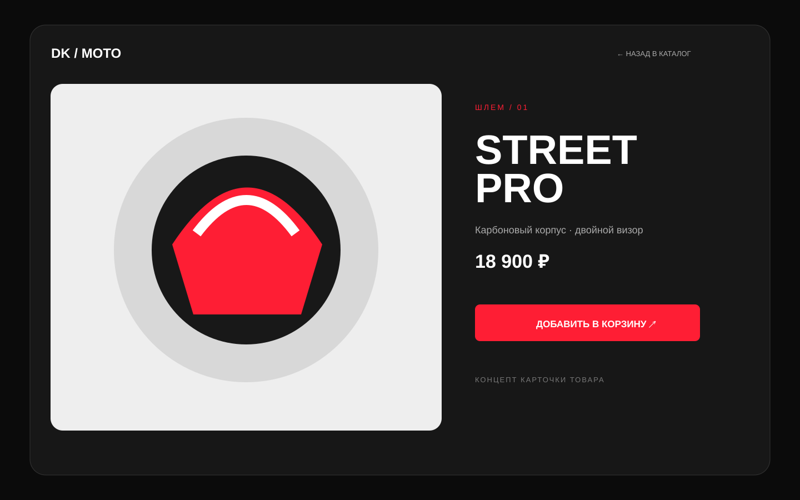

Категории
Быстрый переход к экипировке, деталям и тюнингу.
Структура каталога, карточки товара и заказа для аудитории, которая выбирает быстро и внимательно к деталям.

Покупателю мототоваров нужны категории, характеристики, наличие и уверенное действие покупки. Интерфейс должен одинаково хорошо работать с телефона и компьютера.
Публичная версия проекта сейчас защищена Vercel Authentication. Ниже показан честно обозначенный концепт интерфейса без выдуманных результатов.
Быстрый переход к экипировке, деталям и тюнингу.
Фото, тип товара, название и цена читаются с первого взгляда.
Характеристики и покупка собраны вокруг главного изображения.
Ключевые действия рассчитаны на управление большим пальцем.
Эти изображения показывают направление интерфейса. После открытия публичного доступа заменим их фактическими снимками.


Контрастная система с сильным характером мототематики.
КонцептПродуманы категории, сетка и структура карточки товара.
UX-направлениеНе публикуем неподтверждённые показатели и детали реализации.
Нужен публичный доступ